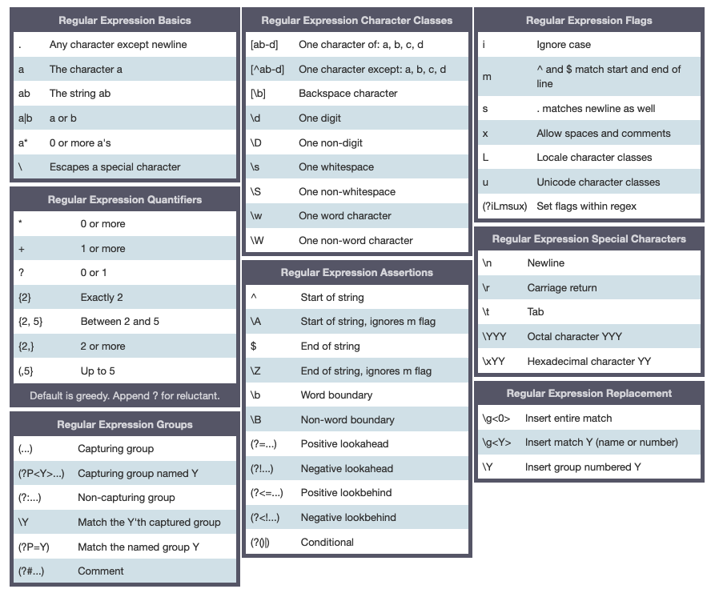

3 Text Mining
3.1 Working with strings
3.1.1 String Types
new_string = "This is a String" # storing a string
print(f'ID: {id(new_string)}') # shows the object identifier (address)## ID: 4654469728## Type: <class 'str'>## Value: This is a Stringsimple_string = 'Hello!' + " I'm a simple string"
print(simple_string)
# multi-line string, note the \n (newline) escape character automatically created## Hello! I'm a simple string## "Hello I'm\na multi-line\nstring!"## Hello I'm
## a multi-line
## string!Be careful when writing raw strings, regex will escape them.
# Normal string with escape sequences leading to a wrong file path!
escaped_string = "C:\the_folder\new_dir\file.txt"
print(escaped_string)## C: he_folder
## ew_dir
ile.txtIn order to keep the backslashes, use r'' to define a raw string:
# raw string keeping the backslashes in its normal form
raw_string = r'C:\the_folder\new_dir\file.txt'
print(raw_string)## C:\the_folder\new_dir\file.txt3.1.2 Strings Operations
## 'Hello 😊 Python 💻!'## 'Python 💻!Python 💻!Python 💻!Python 💻!Python 💻!'# concatenating several strings together in parentheses
s3 = ('This '
'is another way '
'to concatenate '
'several strings!')
s3## 'This is another way to concatenate several strings!'Checking for substrings in a string:
## (True, False)Computing total length of the string:
## 513.1.3 Strings Conversion
## ('Python is great', 'PYTHON IS GREAT', 'Python Is Great', 'R is great')Checking for numbers and alphabet
#.isdecimal() checks only for numeric strings
'12345'.isdecimal(), 'apollo11'.isdecimal()
#.isalpha() checks only for numeric strings## (True, False)'python'.isalpha(), 'number1'.isalpha()
#.isalpha() checks for alphanumeric strings, not just numeric strings## (True, False)## (True, True, False)3.1.4 String Indexing and Slicing
s = 'PYTHON'
for index, character in enumerate(s):
print(f'Character -> {character} has index-> {index}')## Character -> P has index-> 0
## Character -> Y has index-> 1
## Character -> T has index-> 2
## Character -> H has index-> 3
## Character -> O has index-> 4
## Character -> N has index-> 5## ('P', 'Y', 'T', 'H', 'O', 'N')## ('PYTHON', 'YTH', 'PYT', 'HON', 'HON', 'PYTHON')3.1.5 String splitting and joining
## ['I', 'am', 'a', 'comma', 'separated', 'string']## 'I am a comma separated string'## (' I am surrounded by spaces ', 'I am surrounded by spaces')## ['Python is great', ' NLP is also good', '']## Python is great
## NLP is also good## Python is great
## NLP is also good3.2 Regular Expressions
Regular expressions are a powerful tool for various kinds of string manipulation. They are a domain specific language (DSL) that is present as a library in most modern programming languages, not just Python.
Regular expressions in Python can be accessed using the re module, which is part of the standard library.
import re
s1 = 'Python is an excellent language'
s2 = 'I love the Python language. I also use Python to build applications at work!'3.2.1 Match & Find
The match() function only returns a match if a match is found at the beginning of the string s1.
## (None, <re.Match object; span=(0, 6), match='Python'>)pattern is in lower case, hence ignore case flag helps in matching same pattern with different cases.
Other functions to match patterns are re.search() and re.findall(). The function re.search() finds a match of a pattern anywhere in the string. The function re.findall() returns a list of all substrings that match a pattern.
## <re.Match object; span=(11, 17), match='Python'>## ['Python', 'Python']There is also re.finditer() which does the same, except it returns an iterator rather than a list
## String: I love the Python language. I also use Python to build applications at work!for m in re.finditer(pattern, s2, re.IGNORECASE):
print(f"Found match '{m.group(0)}' ranging from index {m.start()} - {m.end()}")## Found match 'Python' ranging from index 11 - 17
## Found match 'Python' ranging from index 39 - 45The regex search returns an object with several methods that give details about it. These methods include group which returns the string matched, start and end which return the start and ending positions of the first match.
print('Found match {} ranging from index {} - {} in the string "{}"'.format(
re.match(pattern, s1, flags=re.IGNORECASE).group(0),
re.match(pattern, s1, flags=re.IGNORECASE).start(),
re.match(pattern, s1, flags=re.IGNORECASE).end(), s1))## Found match Python ranging from index 0 - 6 in the string "Python is an excellent language"3.2.2 Search & Replace
One of the most important re methods that use regular expressions is .sub().
This method replaces all occurrences of the pattern in string with repl, substituting all occurrences, unless count provided. This method returns the modified string.
## 'I love the R language. I also use R to build applications at work!'3.2.3 Metacharacters
Metacharacters are what make regular expressions more powerful than normal string methods.
They allow you to create regular expressions to represent concepts like “one or more repetitions of a vowel”.
The existence of metacharacters poses a problem if you want to create a regular expression (or regex) that matches a literal metacharacter, such as “$”.
You can do this by escaping the metacharacters by putting a backslash in front of them.
However, this can cause problems, since backslashes also have an escaping function in normal Python strings. This can mean putting three or four backslashes in a row to do all the escaping.

3.2.3.1 Example: Email Extraction
To demonstrate a sample usage of regular expressions, lets create a program to extract email addresses from a string. Suppose we have a text that contains an email address: str = "Please contact info@sololearn.com for assistance". Our goal is to extract the substring “info@sololearn.com”.
A basic email address consists of a word and may include dots or dashes. This is followed by the @ sign and the domain name (the name, a dot, and the domain name suffix).
This is the basis for building our regular expression.
pattern = r"([\w\.-]+)@([\w\.-]+)(\.[\w\.]+)"
str = "Please contact info@sololearn.com for assistance"
match = re.search(pattern, str)
if match:
print(match.group())## info@sololearn.com[\w\.-]+ matches one or more word character, dot or dash.
The regex above says that the string should contain a word (with dots and dashes allowed), followed by the @ sign, then another similar word, then a dot and another word.